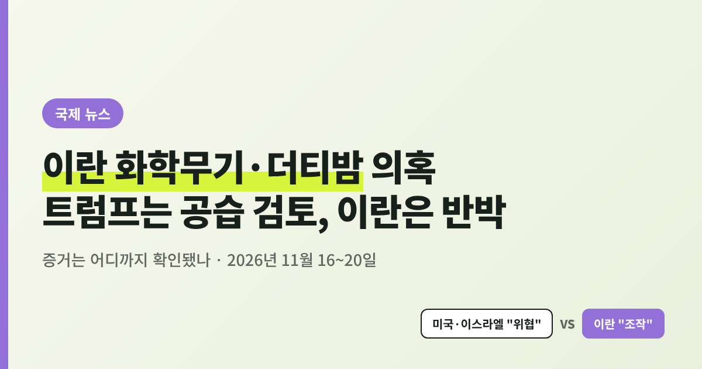
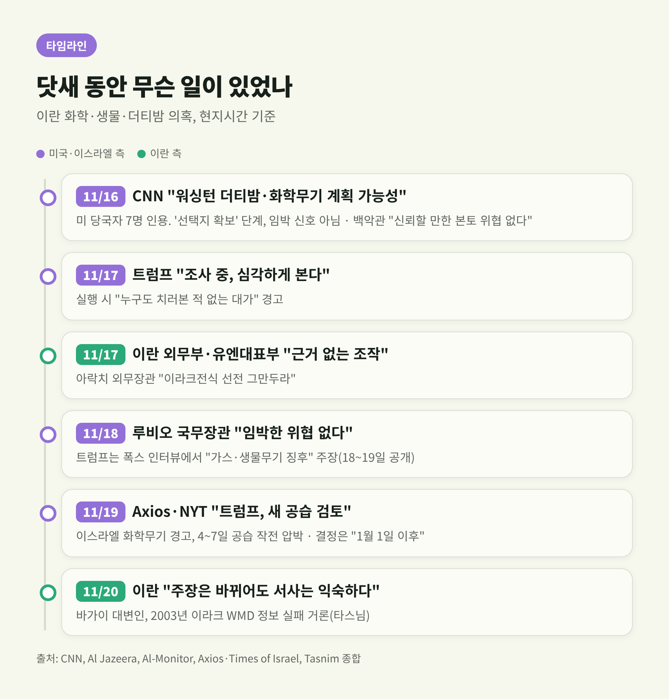
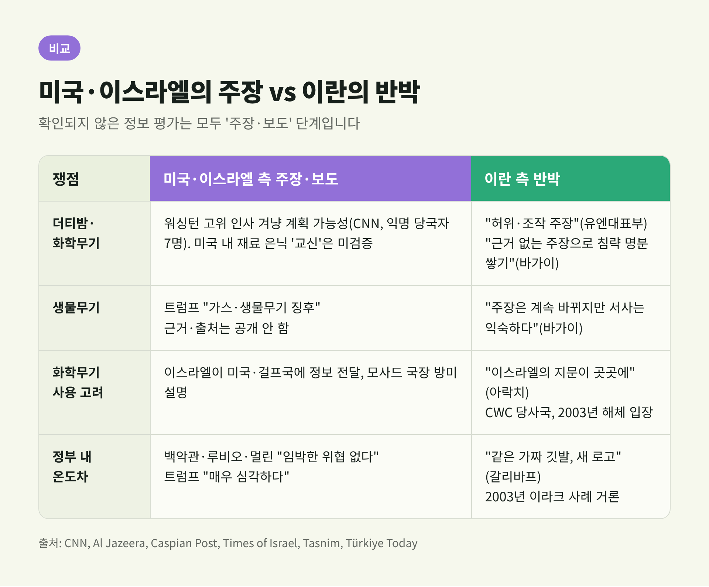
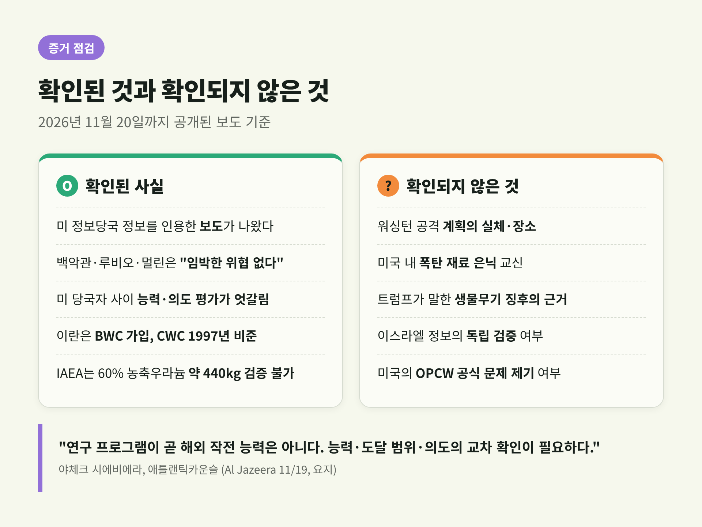
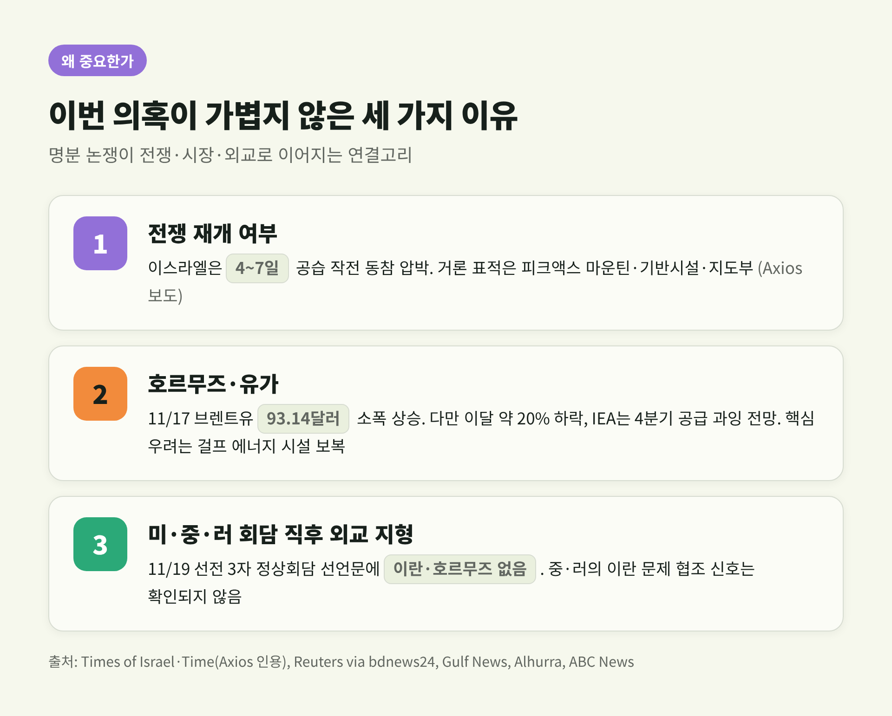
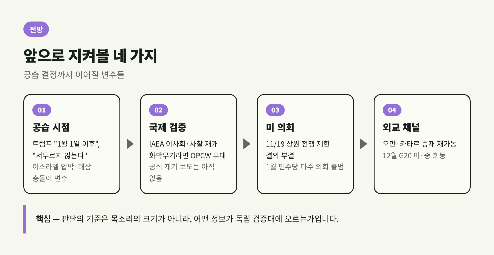

이란 화학무기·더티밤 의혹, 트럼프는 공습 검토하고 이란은 '조작' 반박

이번 글에서는 11월 16~20일 한 주 동안 불거진 이란의 화학·생물·방사능 무기 의혹을 정리해 보겠습니다. 미국과 이스라엘이 무엇을 주장했는지, 이란은 어떻게 반박했는지, 그리고 그 근거가 어느 수준인지를 차례로 살펴봅니다.
먼저 핵심만 세 줄로 요약합니다.
- 미 언론이 정보당국을 인용해 이란의 워싱턴 '더티밤'·화학무기 계획 가능성을 보도했고, 트럼프 대통령은 생물무기 개발 징후까지 거론했습니다.
- 공개된 증거는 아직 없습니다. 백악관과 국무장관도 "임박한 위협은 없다"고 밝혔고, 이란은 "2003년 이라크식 조작"이라고 반박했습니다.
- 트럼프는 이스라엘의 압박 속에 새 공습을 검토 중이지만, 결정은 "1월 1일 이후"로 미뤘습니다.
■ 무슨 일이 있었나 — 닷새 동안의 흐름
시작은 16일(현지시간) CNN 보도였습니다.
CNN은 미 당국자 7명을 인용해, 이란이 워싱턴의 트럼프 행정부 고위 인사를 노린 '더티밤' 또는 화학무기 공격 계획을 세우고 있을 수 있다고 전했습니다. 더티밤은 핵폭발 없이 재래식 폭약으로 방사성 물질을 흩뿌리는 무기입니다.
다만 보도 안에서도 단서가 붙었습니다. 소식통들은 이를 이란이 "선택지를 확보하려는" 단계로 묘사했고, 임박한 공격의 신호는 아니라고 했습니다. 이란이 실행할 능력과 의지가 있는지를 두고 당국자들 사이에서도 견해가 갈렸다고 합니다.
백악관은 곧바로 "모든 잠재적 위협을 감시하고 있지만, 현재 본토에 대한 신뢰할 만한 위협은 없다"고 밝혔습니다.
17일 트럼프 대통령은 "조사하고 있다"며 "심각하게 받아들인다"고 말했습니다. 공격이 현실화되면 이란이 "어느 나라도 치러본 적 없는 대가"를 치를 것이라고 경고했습니다. 같은 날 이란 외무부 바가이 대변인은 "근거 없는 주장을 만들어 퍼뜨리며 추가 침략에 정당성의 겉칠을 하려 한다"고 반박했습니다.
18일 마코 루비오 국무장관은 마닐라에서 "임박한 위협이 있다고 보지 않는다"고 말했습니다. 마크웨인 멀린 국토안보부 장관도 공격 징후가 없다는 입장을 냈습니다.
그런데 18~19일 공개된 폭스뉴스 인터뷰에서 트럼프는 한 걸음 더 나갔습니다. "이란이 가스와 생물(무기)을 들여다보고 있다는 징후가 있다. 우리가 핵을 막았기 때문"이라는 주장입니다. 근거나 세부 내용은 제시하지 않았습니다.
19일에는 Axios와 뉴욕타임스가 트럼프가 이란에 대한 새 대규모 공세를 검토 중이라고 보도했습니다. 이스라엘이 이란의 화학무기 위협을 경고하며 공동 작전을 압박하는 가운데 나온 소식입니다.
20일 이란 국영 성향 매체 타스님은 바가이 대변인의 반박을 다시 전했습니다. "주장은 계속 바뀌지만 기본 서사는 불편할 정도로 익숙하다"는 것입니다.

■ 양측은 무엇을 말했나 — 주장과 반박
미국과 이스라엘 쪽 주장은 세 갈래입니다.
첫째, 워싱턴 더티밤·화학무기 계획 가능성입니다. 익명의 정보당국자 발 보도입니다. 한 소식통은 미국 내에 폭탄 재료가 숨겨져 있다는 이란 측 '교신'을 포착했다고 했지만, 이 대목은 독립적으로 검증되지 않았습니다.
둘째, 트럼프의 화학·생물무기 개발 주장입니다. 대통령이 직접 말했지만 정보 출처나 평가 내용은 공개되지 않았습니다.
셋째, 이스라엘의 화학무기 경고입니다. 뉴욕타임스는 11월 3일 이스라엘이 "이란이 적대국에 화학무기 사용을 고려하고 있다"는 정보를 미국에 전달했다고 처음 보도했습니다. Times of Israel에 따르면 네타냐후 총리는 지난주 모사드 국장 로만 고프만을 워싱턴에 보내 관련 정보를 설명했습니다.
이란의 반박도 단호합니다.
아락치 외무장관은 "이라크전식 선전은 그만두라. 이스라엘의 지문이 곳곳에 묻어 있다"고 적었습니다. 갈리바프 국회의장은 "같은 가짜 깃발, 같은 전쟁 선동, 새 로고뿐"이라고 했습니다. 이란 유엔대표부는 화학무기 관련 주장을 "허위이자 조작"이라며 거부했습니다.
바가이 대변인은 2003년 콜린 파월 당시 국무장관의 유엔 안보리 발표를 직접 거론했습니다. 그는 "세계는 2003년의 교훈에서 무엇이라도 배웠느냐"고 물었습니다.

■ 증거는 어디까지 확인됐나
결론부터 말씀드리면, 공개적으로 검증된 증거는 아직 없습니다.
Al Jazeera는 CNN 보도를 점검한 기사에서 보도가 익명 당국자와 검증되지 않은 정보 조각에 기대고 있다고 지적했습니다. 생물무기 주장을 다룬 후속 기사의 제목도 "증거가 있나"였습니다.
흥미로운 점은 미국 정부 안에서도 메시지가 갈린다는 사실입니다. 대통령은 "매우 심각하다"고 하는데, 백악관 대변인실과 국무장관, 국토안보부 장관은 "임박한 위협은 없다"고 말합니다.
이스라엘의 정보에 대해서도 의견이 엇갈립니다. 뉴욕타임스에 따르면 일부 미 당국자는 10월 23일 국가정보장(DNI)이 이란의 공격 준비를 경고한 메모를 근거로 위협을 진지하게 봤습니다. 반면 다른 당국자들은 네타냐후 정부가 대규모 전투 재개를 끌어내려는 압박이라고 의심했습니다. Axios도 행정부 안에서 이 정보가 "특정 의도에 따른 것"이라는 시각이 있다고 전했습니다.
이스라엘 내부도 한목소리는 아닙니다. 한 이스라엘 고위 국방 당국자는 11월 4일 ynet에 "현시점에서 이란은 이스라엘에 위협이 될 화학 역량이 없다"고 말했습니다. 걸프 국가들도 이스라엘이 증거를 제시하지 않았다며 진지하게 받아들이지 않았다는 보도가 있습니다.
그렇다고 의혹이 완전히 근거 없는 것도 아닙니다. 뉴욕타임스는 미 정보당국이 이란의 화학·생물 역량 강화 "노력이 강화된 증거"를 봤다고 보도했습니다. 다만 주된 판단은 이란이 선제적으로 쓰기보다 대규모 공격을 억지하려는 목적이라는 쪽이었습니다. 영국 왕립합동군사연구소(RUSI)도 생물 공격 가능성은 낮지만, 공습 이후 위험이 크게 높아졌다고 평가한 바 있습니다.
전문가들의 시각은 대체로 신중합니다.
애틀랜틱카운슬의 야체크 시에비에라는 연구 프로그램이 있다고 해서 해외 작전 능력이 있는 것은 아니며, 능력과 도달 범위, 의도에 대한 교차 확인이 필요하다고 했습니다. 국방 컨설턴트 탈하 압둘라자크는 더티밤을 대량살상보다 "대량 교란 무기"에 가깝다고 보고, 워싱턴 공격 위협은 "극히 희박"하다고 평가했습니다. 미 국립과학원 추정으로도 대부분의 더티밤은 도심 한두 블록을 오염시키는 수준입니다.
조약상 지위도 짚어둘 만합니다. 이란은 생물무기금지협약(BWC)에 혁명 이전에 가입했고, 화학무기금지협약(CWC)은 1997년에 비준했습니다. 이란은 화학무기 보유를 부인하며, 이란-이라크 전쟁 시기 역량을 인정한 뒤 2003년 해체했다고 밝혀 왔습니다.

■ 왜 중요한가 — 전쟁, 유가, 외교
이번 의혹이 가볍지 않은 이유는 세 가지입니다.
가장 먼저 전쟁 재개 여부와 직결됩니다. Axios 보도에 따르면 네타냐후 총리는 4~7일간의 제한적 공습 작전에 미국이 함께하길 압박하고 있습니다. 거론된 표적은 아직 공격받지 않은 지하 핵시설 의심지 '피크액스 마운틴', 교량·발전소 같은 기반시설, 그리고 군·민간 지도부입니다. 화학·생물무기 위협은 이런 공습의 명분이 될 수 있다는 점에서 무게가 실립니다.
다음은 호르무즈 해협과 유가입니다. 17일 브렌트유는 배럴당 93.14달러로 0.76% 올랐습니다. 호르무즈 유조선 공격, 바레인 미군 레이더 피격과 미국의 케슘섬 보복 공습, 그리고 더티밤 보도가 함께 작용했습니다. 다만 이달 들어 브렌트유는 약 20% 내린 상태이고, 국제에너지기구(IEA)는 4분기 공급 과잉을 전망합니다. 시장은 아직 전면전보다 '범위 안의 긴장'에 가격을 매기고 있는 셈입니다. 백악관이 공습 검토 과정에서 가장 우려하는 대목도 걸프 석유·가스 시설에 대한 이란의 보복이라고 Gulf News는 전했습니다.
마지막은 외교 지형입니다. 19일 중국 선전에서 트럼프·시진핑·푸틴 3국 정상이 처음으로 한자리에 모였습니다. 이들은 석유 공급 확대와 핵 위험 감소 등을 담은 선언을 냈지만, 이란과 호르무즈는 선언문에 들어가지 않았습니다. 트럼프는 "이란이 핵무기를 갖게 두지 않겠다"고 했으나, 중·러로부터 이란 문제 협조를 얻어냈다는 신호는 보이지 않았습니다. 전문가들은 러시아는 우크라이나, 중국은 동아시아에 관심이 쏠려 있어 이란 문제에서 목표가 엇갈린다고 분석합니다.

■ 배경 — 9개월째 이어진 '전쟁도 평화도 아닌' 상태
이번 논란은 진공 속에서 나오지 않았습니다.
2026년 2월 28일 미국과 이스라엘이 이란을 공격하며 전쟁이 시작됐습니다. 이란은 이스라엘과 미군 기지가 있는 걸프 국가에 보복했고, 하메네이 당시 최고지도자를 포함한 지도부 다수가 숨졌습니다. 4월 휴전과 6월 양해각서(MOU)로 교전이 잠시 멈췄지만, MOU는 결국 무너졌습니다.
대규모 교전은 잦아들었으나 공식 종전은 없습니다. 오만과 카타르가 중재하는 대화도 교착 상태입니다. 미 국방부 당국자는 11월 13일 기준 전쟁 비용을 483억 달러로 추산했습니다.
흐름이 다시 바뀐 것은 11월 초입니다. 3일 중간선거에서 민주당이 의회를 장악했고, 전쟁과 그로 인한 경제 부담이 표심에 영향을 줬다는 분석이 나왔습니다. 12~13일께 트럼프는 SNS에 "이란과의 합의는 필요 없다. 그런 시절은 이미 지났다"고 적었습니다. 밴스 부통령에게는 이란 협상 대신 국내 문제에 집중하라고 지시했습니다.
핵 검증 공백도 배경에 깔려 있습니다. 이란은 2025년 6월 공습 이후 국제원자력기구(IAEA)의 정기 사찰을 받지 않고 있습니다. IAEA는 11월 13일 보고서에서 60% 농축우라늄 약 440kg의 위치와 상태를 검증하지 못하고 있으며 "신고된 핵물질의 전용이 없었다고 결론 내릴 수 없다"고 밝혔습니다. 이란은 군사 공격 위협 아래에서는 전면 사찰을 받을 수 없다는 입장입니다.
예전엔 핵 프로그램이 의혹의 중심이었습니다. 지금은 화학·생물무기로 무게가 옮겨가고 있습니다. 바가이 대변인이 "주장이 계속 바뀐다"고 비판한 지점도 바로 여기입니다.
2003년 이라크 사례와의 비교는 조심스럽게 볼 필요가 있습니다. 당시 미국은 이라크의 대량살상무기를 개전 명분으로 삼았지만 비축분은 발견되지 않았고, 2005년 대통령 직속 위원회는 정보가 "완전히 틀렸다"고 결론 내렸습니다. 이번에도 이란과 일부 전문가, 그리고 일부 미 당국자가 그 기억을 꺼냈습니다.
하지만 차이도 분명합니다. 이번에는 미 행정부 핵심 인사들이 스스로 위협의 임박성을 부인했고, 정보당국 내부의 이견이 보도로 드러났습니다. 반대로 이란은 1년 넘게 IAEA 사찰을 받지 않아 의혹을 해소할 수단이 부족한 상황이기도 합니다. 어느 한쪽의 서사만으로 판단하기 어려운 이유입니다.
■ 앞으로 무엇을 봐야 하나
관전 포인트는 네 가지로 정리됩니다.
- 공습 시점 — 트럼프는 로이터에 "연초 이후에 얘기하자", Axios에 "어떤 결정도 서두르지 않는다"고 말했습니다. 연내 대규모 공습 가능성은 낮아진 신호로 읽히지만, 이스라엘의 압박과 해상 충돌이 변수입니다.
- 국제 검증 — IAEA 이사회 논의와 사찰 재개 여부가 우선입니다. 화학무기라면 이란이 당사국인 CWC의 이행기구, 화학무기금지기구(OPCW)가 무대가 될 수 있습니다. 다만 미국이 이번 의혹을 OPCW에 공식 제기했다는 보도는 아직 확인되지 않습니다.
- 미 의회 — 19일 공화당이 다수인 상원은 전쟁을 제한하는 결의안을 부결했습니다. Gulf News는 표결 결과를 48대 51로 전했습니다. 내년 1월 민주당 다수 의회가 출범하면 견제의 강도는 달라질 수 있습니다.
- 외교 채널 — 오만·카타르 중재가 되살아날지, 12월 마이애미 G20에서 미·중 정상이 이란 문제를 다시 다룰지도 지켜볼 대목입니다.

정리하면 이렇습니다.
미국과 이스라엘은 이란의 비재래식 무기 위협을 경고하고, 이란은 이를 전쟁 명분 만들기라고 반박합니다. 지금까지 공개된 것은 익명 정보와 정치 지도자의 발언, 그리고 그에 대한 부인입니다. 독립적으로 검증된 증거는 아직 나오지 않았습니다.
"주장은 크게, 검증은 아직" — 이번 사안을 한 줄로 줄이면 이렇습니다.
결국 판단의 근거는 누구의 목소리가 더 큰지가 아니라, 어떤 정보가 검증대에 오르는지가 되어야 할 것입니다. 앞으로 증거가 공개되는지 묻는다면, 그것이 이 사안의 다음 장을 가를 열쇠라고 답하겠습니다.
참고자료
- Al Jazeera — Is Iran plotting a 'dirty bomb' attack in the US? What we know (2026-11-17)
- Al Jazeera — Trump claims Iran is developing bioweapons: Is there any evidence? (2026-11-19)
- CNN Newsource 배포(WWSB) — US monitoring reported Iran dirty bomb plans (2026-11-16)
- Türkiye Today — Iran calls CNN dirty bomb report fabricated pretext for new attacks (2026-11-17)
- Caspian Post — Iran Denies Allegations of Chemical Weapons Plot in Washington (2026-11-18)
- Al-Monitor — Rubio says no imminent threat to Washington (2026-11-18)
- Axios — Trump weighs strikes on Iran as Israel warns of chemical weapons (2026-11-19)
- Times of Israel — Trump said weighing another Iran offensive as Netanyahu pushes 4- to 7-day campaign (2026-11-19)
- TIME — 'We've Got Time': Trump Suggests Iran War Will Continue Into 2027 (2026-11-20)
- Gulf News — Trump Delays Decision on Iran Strikes Until 2027 (2026-11-20)
- Tasnim — Iran Slams US Claims of Chemical, Biological Weapons Development (2026-11-20)
- Yahoo News — Trump Claims Iran Is Developing Biological Weapons (2026-11-19)
- The New York Times via GV Wire — Israeli Claims of Iranian Chemical Weapons Divide US Officials (2026-11-03)
- Ynet — Iran has no chemical capability threatening Israel, defense official says (2026-11-04)
- Alhurra — Trump, Xi, Putin Declaration Skips Iran After First-Ever Trilateral Summit (2026-11-19)
- ABC News — Trump China trip: Iran and Ukraine not in 'peace declaration' (2026-11-19)
- Reuters via bdnews24 — 유가 동향 (2026-11-18)
- News Tribune(AP) — Trump says no need for Iran deal, instructs Vance (2026-11-13)
- News Tribune(Bloomberg) — Iran extends shutout of UN nuclear inspectors (2026-11-15)